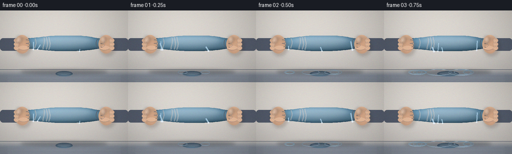
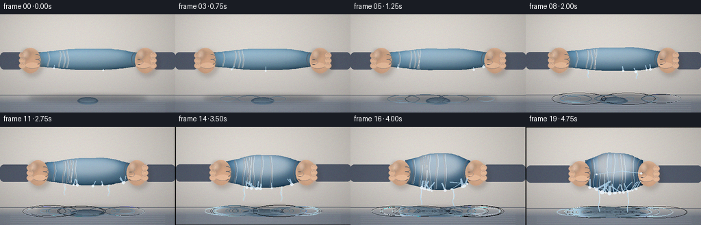
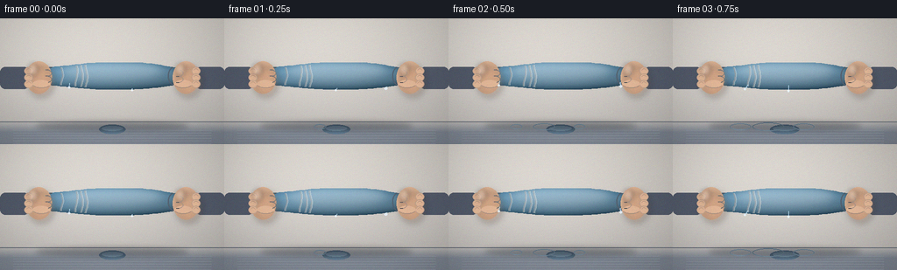
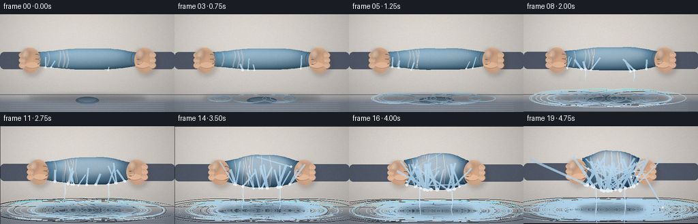

CODING AGENTS AS PIXEL WORLD MODELS
traex/Seed-2.1-Pro-0915 · phygen_012
点击播放 · 原生 RGB 像素
逐轮保存的候选
回放视频、检查图与代码变化。
每份候选均可单独播放。实际图片检查记录在下方工具轨迹中。
候选 01播放与检查图
点击播放 · 原生 RGB 像素


展开代码变化
--- 上一保存版本
+++ 本次保存版本
@@ -0,0 +1,384 @@
+"""Procedural text-to-video renderer.
+
+Timelapse of a water-filled soft towel being forcefully squeezed by two
+hands. Everything is drawn with numpy + PIL at 2x supersampling and
+downscaled to the required 256x144 RGB frames.
+"""
+import math
+from pathlib import Path
+
+import numpy as np
+from PIL import Image, ImageDraw, ImageFilter
+
+import artifact_io
+
+CASE_DIR = Path(__file__).parent
+W, H, N, FPS = 256, 144, 20, 4.0
+SS = 2
+W2, H2 = W * SS, H * SS
+DT = 1.0 / FPS
+
+rng = np.random.default_rng(20261110)
+
+# ---------------------------------------------------------------- palette
+SKIN = (232, 188, 156)
+SKIN_SHADOW = (196, 146, 114)
+SKIN_LINE = (148, 102, 78)
+SLEEVE = (84, 92, 108)
+SLEEVE_DARK = (60, 66, 80)
+TOWEL_DRY = np.array([130, 172, 192], dtype=float)
+TOWEL_WET = np.array([58, 96, 126], dtype=float)
+FOLD_DARK = (34, 58, 80)
+FOLD_LIGHT = (202, 226, 238)
+WATER = (184, 220, 244)
+WATER_CORE = (236, 247, 255)
+
+CY = 132 # towel / hands center, internal px
+FLOOR_Y = 248 # water surface line, internal px
+CX = W2 // 2
+
+
+# ---------------------------------------------------------------- helpers
+def lerp(a, b, t):
+ return a + (b - a) * t
+
+
+def smoothstep(t):
+ return t * t * (3.0 - 2.0 * t)
+
+
+def make_background():
+ """Wall + wet floor gradient with a soft key light from upper left."""
+ bg = np.zeros((H2, W2, 3), dtype=float)
+ top = np.array([216, 211, 204], dtype=float)
+ bottom = np.array([188, 184, 180], dtype=float)
+ for y in range(H2):
+ t = y / (H2 - 1)
+ bg[y, :, :] = lerp(top, bottom, t)
+ floor_t = np.clip((np.arange(H2) - (FLOOR_Y - 14)) / 26.0, 0, 1)[:, None]
+ floor_col = np.array([126, 134, 146], dtype=float)
+ bg = bg * (1 - floor_t[..., None]) + floor_col * floor_t[..., None]
+ yy, xx = np.mgrid[0:H2, 0:W2]
+ light = np.exp(-(((xx - 110) / 320.0) ** 2 + ((yy - 40) / 240.0) ** 2))
+ bg += 18.0 * light[..., None]
+ img = Image.fromarray(np.clip(bg, 0, 255).astype(np.uint8), "RGB")
+ draw = ImageDraw.Draw(img)
+ draw.line([(0, FLOOR_Y - 12), (W2, FLOOR_Y - 12)], fill=(110, 116, 126), width=2)
+ for k in range(7):
+ y = FLOOR_Y + 8 + k * 6
+ draw.line([(30, y), (W2 - 30, y)], fill=(150, 158, 170), width=1)
+ return img.convert("RGBA")
+
+
+BACKGROUND = make_background()
+
+# stable random structure so the cloth keeps its identity between frames
+EDGE_PHASE = rng.uniform(0, math.tau, 6)
+FOLD_U = np.sort(rng.uniform(-0.82, 0.82, 10))
+FOLD_PHASE = rng.uniform(0, math.tau, 10)
+
+
+def pressure(i):
+ # rapidly intensifying squeeze
+ return (i / (N - 1)) ** 1.7
+
+
+def towel_geom(p):
+ length = lerp(152, 84, smoothstep(p))
+ half_h = lerp(30, 56, smoothstep(p))
+ return length, half_h
+
+
+def edge_y(u, half_h, p, i):
+ prof = half_h * math.sqrt(max(0.05, 1.0 - 0.55 * u * u))
+ wob = (2.2 * math.sin(3.1 * u + EDGE_PHASE[0])
+ + 1.4 * math.sin(7.7 * u + EDGE_PHASE[1])) * (1.0 + 0.6 * p)
+ jitter = 1.6 * p * math.sin(i * 8.9 + u * 4.0)
+ top = CY - prof + wob * 0.6 + jitter
+ bot = CY + prof - wob * 0.4 - jitter
+ return top, bot
+
+
+def build_towel(p, i):
+ """Return RGBA towel layer (folds + sheen included)."""
+ length, half_h = towel_geom(p)
+ mask = Image.new("L", (W2, H2), 0)
+ md = ImageDraw.Draw(mask)
+
+ nseg = 46
+ us = np.linspace(-1, 1, nseg)
+ tops, bots = [], []
+ for u in us:
+ t, b = edge_y(u, half_h, p, i)
+ tops.append(t)
+ bots.append(b)
+ xs = CX + us * length
+ polygon = [(x, y) for x, y in zip(xs, tops)]
+ polygon += [(x, y) for x, y in zip(xs[::-1], bots[::-1])]
+ md.polygon(polygon, fill=255)
+
+ arr = np.zeros((H2, W2, 4), dtype=np.uint8)
+ m = np.asarray(mask, dtype=bool)
+ ys, xs_np = np.nonzero(m)
+ nx = (xs_np - CX) / max(length, 1)
+ ny = (ys - CY) / max(half_h, 1)
+ shade = 1.0 - 0.22 * np.clip(ny, -1, 1) + 0.10 * np.clip(-nx, -1, 1)
+ wet = 0.45 + 0.55 * p
+ base = TOWEL_DRY * (1 - wet) + TOWEL_WET * wet
+ rgb = base[None, :] * shade[:, None]
+ arr[ys, xs_np, :3] = np.clip(rgb, 0, 255).astype(np.uint8)
+ arr[ys, xs_np, 3] = 255
+ # soft inner-edge darkening around the cloth silhouette
+ edge_band = mask.filter(ImageFilter.GaussianBlur(7))
+ edge_arr = np.asarray(edge_band, dtype=float) / 255.0
+ dark = (1.0 - edge_arr) * 70.0
+ arr[:, :, :3] = np.clip(
+ arr[:, :, :3].astype(int) - dark[..., None].astype(int), 0, 255
+ ).astype(np.uint8)
+ layer = Image.fromarray(arr, "RGBA")
+ d = ImageDraw.Draw(layer)
+
+ # compression folds, more and deeper as pressure builds
+ n_folds = 4 + int(round(6 * p))
+ for j in range(n_folds):
+ u = FOLD_U[j]
+ x0 = CX + u * length
+ t, b = edge_y(u, half_h, p, i)
+ pts = []
+ steps = 12
+ for s in range(steps + 1):
+ f = s / steps
+ y = lerp(t + 3, b - 3, f)
+ x = x0 + math.sin(f * math.pi * 1.6 + FOLD_PHASE[j]) * 2.6
+ pts.append((x, y))
+ alpha = int(90 + 110 * p)
+ width = max(2, int(2 + 3 * p))
+ d.line(pts, fill=(*FOLD_DARK, alpha), width=width, joint="curve")
+ ridge = [(x + width + 1, y) for x, y in pts]
+ d.line(ridge, fill=(*FOLD_LIGHT, int(50 + 70 * p)), width=1)
+
+ # grip creases where the fists clamp the ends
+ for gu in (-0.92, 0.92):
+ gx = CX + gu * length
+ t, b = edge_y(gu, half_h, p, i)
+ d.arc([gx - 12, t, gx + 12, b], 80, 280, fill=(*FOLD_DARK, 180), width=3)
+
+ # wet glossy sheen across the upper cloth
+ sheen = Image.new("L", (W2, H2), 0)
+ sd = ImageDraw.Draw(sheen)
+ sd.ellipse([CX - length * 0.75, CY - half_h - 6,
+ CX + length * 0.75, CY + half_h * 0.35], fill=int(70 + 90 * p))
+ sheen = sheen.filter(ImageFilter.GaussianBlur(10))
+ gloss = Image.new("RGBA", (W2, H2), (255, 255, 255, 0))
+ gloss.putalpha(sheen)
+ layer.alpha_composite(gloss)
+ layer.putalpha(Image.composite(layer.getchannel("A"),
+ Image.new("L", (W2, H2), 0), mask))
+ return layer, length, half_h
+
+
+def draw_fist(canvas, side, cx, cy, p):
+ """side = -1 left fist, +1 right fist."""
+ layer = Image.new("RGBA", (W2, H2), (0, 0, 0, 0))
+ d = ImageDraw.Draw(layer)
+ rx, ry = 30, 37
+
+ # sleeve reaching off-screen
+ outer = 0 if side < 0 else W2
+ sleeve_x0, sleeve_x1 = sorted((outer, cx - side * (rx - 6)))
+ d.rounded_rectangle([sleeve_x0, cy - 24, sleeve_x1, cy + 26],
+ radius=12, fill=SLEEVE)
+ d.line([(sleeve_x1 if side < 0 else sleeve_x0, cy - 20),
+ (sleeve_x1 if side < 0 else sleeve_x0, cy + 22)],
+ fill=SLEEVE_DARK, width=3)
+
+ # palm
+ d.ellipse([cx - rx, cy - ry, cx + rx, cy + ry], fill=SKIN)
+ shade = Image.new("RGBA", (W2, H2), (0, 0, 0, 0))
+ sd = ImageDraw.Draw(shade)
+ sd.ellipse([cx - rx + 8, cy - ry + 12, cx + rx + 4, cy + ry + 6],
+ fill=(*SKIN_SHADOW, 110))
+ shade = shade.filter(ImageFilter.GaussianBlur(8))
+ layer.alpha_composite(shade)
+ d = ImageDraw.Draw(layer)
+
+ # knuckles facing the towel
+ for dy in (-15, 0, 15):
+ kx = cx + side * (rx - 7)
+ d.ellipse([kx - 10, cy + dy - 9, kx + 10, cy + dy + 9],
+ fill=SKIN, outline=(*SKIN_SHADOW, 160), width=2)
+ d.arc([kx - 6, cy + dy - 5, kx + 6, cy + dy + 7], 200, 340,
+ fill=(*SKIN_LINE, 150), width=1)
+
+ # thumb wrapping across the front
+ thumb_cx = cx - side * 6
+ d.ellipse([thumb_cx - 20, cy + 6, thumb_cx + 20, cy + 24], fill=SKIN)
+ d.arc([thumb_cx - 20, cy + 6, thumb_cx + 20, cy + 24], 20, 160,
+ fill=(*SKIN_LINE, 140), width=2)
+
+ # finger creases on the outer back of the fist
+ for dy in (-10, 4):
+ d.arc([cx - side * 18 - 12, cy + dy - 8,
+ cx - side * 18 + 12, cy + dy + 8],
+ 250 if side < 0 else -70, 70 if side < 0 else 110,
+ fill=(*SKIN_LINE, 120), width=2)
+
+ hl = Image.new("RGBA", (W2, H2), (0, 0, 0, 0))
+ hd = ImageDraw.Draw(hl)
+ hd.ellipse([cx - rx + 6, cy - ry + 5, cx - 2, cy - 4],
+ fill=(255, 235, 220, 90))
+ hl = hl.filter(ImageFilter.GaussianBlur(5))
+ layer.alpha_composite(hl)
+ canvas.alpha_composite(layer)
+
+
+# ---------------------------------------------------------------- water
+class WaterSystem:
+ def __init__(self):
+ self.drops = [] # x, y, vx, vy, r
+ self.ripples = [] # x, radius, alpha
+ self.emitted = 0.0
+
+ def update_and_emit(self, p, i, length, half_h):
+ survivors = []
+ for x, y, vx, vy, r in self.drops:
+ vy += 2900.0 * DT
+ x += vx * DT
+ y += vy * DT
+ if y >= FLOOR_Y - 2:
+ self.ripples.append([x, r, 170])
+ if r > 3.2 and rng.random() < 0.5:
+ self.ripples.append([x + rng.uniform(-4, 4), 1.0, 120])
+ continue
+ if -20 < x < W2 + 20:
+ survivors.append((x, y, vx, vy, r))
+ self.drops = survivors
+
+ for rp in self.ripples:
+ rp[1] += 16.0
+ rp[2] -= 15.0
+ self.ripples = [rp for rp in self.ripples if rp[2] > 0]
+
+ n_drips = int(3 + 24 * p)
+ n_burst = int(10 * max(0.0, p - 0.35) ** 1.3)
+ for _ in range(n_drips):
+ u = rng.uniform(-0.92, 0.92)
+ _, b = edge_y(u, half_h, p, i)
+ x = CX + u * length + rng.uniform(-3, 3)
+ y = b + rng.uniform(0, 4)
+ vx = rng.normal(0, 30 + 220 * p)
+ vy = rng.uniform(40, 180) + 260 * p
+ r = rng.uniform(2.0, 3.6 + 2.2 * p)
+ self.drops.append([x, y, vx, vy, r])
+ for _ in range(n_burst):
+ side = rng.choice([-1, 1])
+ u = side * rng.uniform(0.55, 0.95)
+ t, b = edge_y(u, half_h, p, i)
+ x = CX + u * length
+ y = rng.uniform(t, b)
+ vx = side * rng.uniform(260, 620) * (0.4 + p)
+ vy = rng.uniform(-160, 220)
+ r = rng.uniform(1.8, 3.4)
+ self.drops.append([x, y, vx, vy, r])
+ self.emitted += n_drips + n_burst
+
+ def draw_floor_fx(self, canvas):
+ d = ImageDraw.Draw(canvas)
+ pr = min(150.0, 34.0 + self.emitted * 1.05)
+ d.ellipse([CX - pr, FLOOR_Y - 5, CX + pr, FLOOR_Y + 16],
+ fill=(110, 140, 165, 95))
+ d.ellipse([CX - pr * 0.8, FLOOR_Y - 2, CX + pr * 0.8, FLOOR_Y + 9],
+ fill=(170, 205, 228, 70))
+ for x, rad, alpha in self.ripples:
+ a = int(max(0, alpha))
+ d.ellipse([x - rad, FLOOR_Y - 3 - rad * 0.18,
+ x + rad, FLOOR_Y + 3 + rad * 0.18],
+ outline=(*WATER, a), width=2)
+
+ def draw_streams(self, canvas, p, i, length, half_h):
+ if p < 0.12:
+ return
+ d = ImageDraw.Draw(canvas)
+ stream_len = 14 + 90 * p
+ for u in (-0.52, 0.48):
+ _, b = edge_y(u, half_h, p, i)
+ x0 = CX + u * length
+ pts = []
+ for s in range(10):
+ f = s / 9
+ pts.append((x0 + math.sin(f * 9 + i * 1.7 + u * 5) * 2.2,
+ b + f * stream_len))
+ d.line(pts, fill=(*WATER, 150), width=2)
+ d.line([(x0 + 1, b), (x0 + 1, b + stream_len * 0.7)],
+ fill=(*WATER_CORE, 120), width=1)
+
+ def draw_drops(self, canvas):
+ layer = Image.new("RGBA", (W2, H2), (0, 0, 0, 0))
+ d = ImageDraw.Draw(layer)
+ for x, y, vx, vy, r in self.drops:
+ px, py = x - vx * DT * 0.85, y - vy * DT * 0.85
+ speed = math.hypot(vx, vy)
+ w = max(1, int(r * 1.6))
+ d.line([(px, py), (x, y)], fill=(*WATER, 200), width=w)
+ d.ellipse([x - r, y - r, x + r, y + r], fill=(*WATER_CORE, 225))
+ if speed > 700 and rng.random() < 0.3:
+ d.ellipse([x - r * 0.4, y - r * 0.4, x + r * 0.4, y + r * 0.4],
+ fill=(255, 255, 255, 255))
+ canvas.alpha_composite(layer)
+
+
+yy, xx = np.mgrid[0:H, 0:W]
+VIGNETTE = 1.0 - 0.22 * np.clip(
+ (((xx - W / 2) / (W * 0.72)) ** 2 + ((yy - H / 2) / (H * 0.85)) ** 2), 0, 1)
+
+
+def render_frame(i):
+ p = pressure(i)
+ length, half_h = towel_geom(p)
+
+ # high-pressure tremor -> tiny camera shake
+ shake = 2.4 * p
+ ox = rng.normal(0, shake)
+ oy = rng.normal(0, shake * 0.6)
+
+ frame = BACKGROUND.copy()
+
+ water.draw_floor_fx(frame)
+
+ # contact shadow under towel and fists
+ sh = Image.new("RGBA", (W2, H2), (0, 0, 0, 0))
+ sd = ImageDraw.Draw(sh)
+ sd.ellipse([CX - length * 1.15, FLOOR_Y - 12,
+ CX + length * 1.15, FLOOR_Y + 8], fill=(20, 26, 34, 80))
+ sh = sh.filter(ImageFilter.GaussianBlur(6))
+ frame.alpha_composite(sh)
+
+ towel, _, _ = build_towel(p, i)
+ frame.alpha_composite(towel)
+
+ fist_x = CX + length + 16
+ draw_fist(frame, -1, CX - fist_x + CX, CY + 3, p)
+ draw_fist(frame, +1, fist_x, CY + 3, p)
+
+ water.update_and_emit(p, i, length, half_h)
+ water.draw_streams(frame, p, i, length, half_h)
+ water.draw_drops(frame)
+
+ frame = frame.transform(
+ (W2, H2), Image.Transform.AFFINE, (1, 0, -ox, 0, 1, -oy),
+ resample=Image.Resampling.BICUBIC, fillcolor=(0, 0, 0, 0))
+ small = frame.convert("RGB").resize((W, H), Image.Resampling.LANCZOS)
+ arr = np.asarray(small, dtype=float)
+ arr *= VIGNETTE[..., None]
+ arr += rng.normal(0, 2.2, arr.shape)
+ return np.clip(arr, 0, 255).astype(np.uint8)
+
+
+water = WaterSystem()
+# pre-seed a couple of already-falling drops so frame 0 looks alive
+water.drops.append([CX - 40, CY + 40, 10, 260, 2.6])
+water.drops.append([CX + 55, CY + 30, -8, 200, 2.2])
+
+frames = np.stack([render_frame(i) for i in range(N)], axis=0)
+artifact_io.save(frames, CASE_DIR)
+print("saved", frames.shape, "to", CASE_DIR)
候选 02播放与检查图
点击播放 · 原生 RGB 像素


展开代码变化
--- 上一保存版本
+++ 本次保存版本
@@ -183,9 +183,10 @@
d = ImageDraw.Draw(layer)
rx, ry = 30, 37
- # sleeve reaching off-screen
+ # sleeve reaching off-screen, attached at the outer edge of the fist
outer = 0 if side < 0 else W2
- sleeve_x0, sleeve_x1 = sorted((outer, cx - side * (rx - 6)))
+ attach = cx + side * (rx - 8)
+ sleeve_x0, sleeve_x1 = sorted((outer, attach))
d.rounded_rectangle([sleeve_x0, cy - 24, sleeve_x1, cy + 26],
radius=12, fill=SLEEVE)
d.line([(sleeve_x1 if side < 0 else sleeve_x0, cy - 20),
@@ -242,12 +243,13 @@
def update_and_emit(self, p, i, length, half_h):
survivors = []
for x, y, vx, vy, r in self.drops:
- vy += 2900.0 * DT
+ vy += 2200.0 * DT
x += vx * DT
y += vy * DT
if y >= FLOOR_Y - 2:
- self.ripples.append([x, r, 170])
- if r > 3.2 and rng.random() < 0.5:
+ if rng.random() < 0.55:
+ self.ripples.append([x, r, 120])
+ if r > 3.2 and rng.random() < 0.25:
self.ripples.append([x + rng.uniform(-4, 4), 1.0, 120])
continue
if -20 < x < W2 + 20:
@@ -255,19 +257,19 @@
self.drops = survivors
for rp in self.ripples:
- rp[1] += 16.0
- rp[2] -= 15.0
+ rp[1] += 11.0
+ rp[2] -= 17.0
self.ripples = [rp for rp in self.ripples if rp[2] > 0]
- n_drips = int(3 + 24 * p)
- n_burst = int(10 * max(0.0, p - 0.35) ** 1.3)
+ n_drips = int(2 + 13 * p)
+ n_burst = int(6 * max(0.0, p - 0.35) ** 1.3)
for _ in range(n_drips):
u = rng.uniform(-0.92, 0.92)
_, b = edge_y(u, half_h, p, i)
x = CX + u * length + rng.uniform(-3, 3)
y = b + rng.uniform(0, 4)
- vx = rng.normal(0, 30 + 220 * p)
- vy = rng.uniform(40, 180) + 260 * p
+ vx = rng.normal(0, 20 + 150 * p)
+ vy = rng.uniform(40, 140) + 180 * p
r = rng.uniform(2.0, 3.6 + 2.2 * p)
self.drops.append([x, y, vx, vy, r])
for _ in range(n_burst):
@@ -284,7 +286,7 @@
def draw_floor_fx(self, canvas):
d = ImageDraw.Draw(canvas)
- pr = min(150.0, 34.0 + self.emitted * 1.05)
+ pr = min(122.0, 30.0 + self.emitted * 0.55)
d.ellipse([CX - pr, FLOOR_Y - 5, CX + pr, FLOOR_Y + 16],
fill=(110, 140, 165, 95))
d.ellipse([CX - pr * 0.8, FLOOR_Y - 2, CX + pr * 0.8, FLOOR_Y + 9],
@@ -299,7 +301,7 @@
if p < 0.12:
return
d = ImageDraw.Draw(canvas)
- stream_len = 14 + 90 * p
+ stream_len = 12 + 52 * p
for u in (-0.52, 0.48):
_, b = edge_y(u, half_h, p, i)
x0 = CX + u * length
@@ -308,17 +310,17 @@
f = s / 9
pts.append((x0 + math.sin(f * 9 + i * 1.7 + u * 5) * 2.2,
b + f * stream_len))
- d.line(pts, fill=(*WATER, 150), width=2)
- d.line([(x0 + 1, b), (x0 + 1, b + stream_len * 0.7)],
- fill=(*WATER_CORE, 120), width=1)
+ d.line(pts, fill=(*WATER, 130), width=2)
+ d.line([(x0 + 1, b), (x0 + 1, b + stream_len * 0.6)],
+ fill=(*WATER_CORE, 90), width=1)
def draw_drops(self, canvas):
layer = Image.new("RGBA", (W2, H2), (0, 0, 0, 0))
d = ImageDraw.Draw(layer)
for x, y, vx, vy, r in self.drops:
- px, py = x - vx * DT * 0.85, y - vy * DT * 0.85
+ px, py = x - vx * DT * 0.35, y - vy * DT * 0.35
speed = math.hypot(vx, vy)
- w = max(1, int(r * 1.6))
+ w = max(1, int(r * 1.1))
d.line([(px, py), (x, y)], fill=(*WATER, 200), width=w)
d.ellipse([x - r, y - r, x + r, y + r], fill=(*WATER_CORE, 225))
if speed > 700 and rng.random() < 0.3:
可观测工具轨迹
实际执行的命令与返回图片。
命令 1exit 0
/bin/bash -lc 'cat prompt.txt; echo "---"; cat GENERATION_RULES.md; echo "---"; cat task_spec.json; echo "---"; ls -la'
命令 2exit 0
/bin/bash -lc 'cat artifact_io.py'
命令 3exit 0
/bin/bash -lc 'python3 -c "import numpy, PIL; print(numpy.__version__, PIL.__version__)"'
命令 4exit 0
/bin/bash -lc 'cd . && time python3 generate.py'
命令 5exit 0
/bin/bash -lc 'cd . && python3 generate.py 2>/dev/null'
视觉工具实际返回图片 1

视觉工具实际返回图片 2

保存候选 2 份；完成命令 5 次；可验证图片返回 2 张。原始 API 响应与完整日志保留在本地。